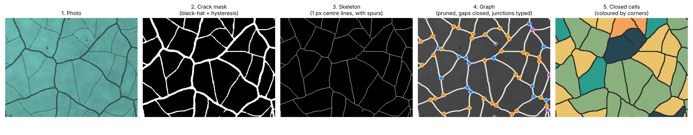
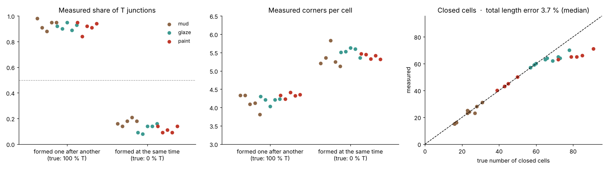

Project · Computer vision · Graph analysis
Crack Network Graph
Drop a photo of a cracked surface and get the crack network back as a measured graph: every crack segment becomes an edge, every junction a node. Lengths, widths and directions, the type of every junction (T, Y or X) and the closed cells between cracks, and the junction types tell how the network formed.
- Junctions found
- 0.92 / 0.97 R / P
- T vs Y type correct
- 90 %
- Formation recognised
- 30 / 30 images
- Python
- OpenCV
- scikit-image
- NetworkX
- Gradio
- GeoJSON / GraphML
Live demo
Pixels in, graph out
Pick an example or drop your own photo (dried mud, glaze, old paint, concrete, a road…). The full pipeline runs in your browser; nothing is uploaded. The examples are generated images with a known network, so the page scores its own result.
Settings
Accuracy vs. the known network
Junctions matched within 10 px (12 px margin), as in the validation.
Download the network as vectors
How it works
From pixels to a graph
Pixel-based crack analysis gives numbers like "8 % of the area is cracked". A graph describes the structure. When cracks appear one after another, each new crack runs into an older one at about 90° (T junctions). Cracks that form at the same time, or a network that matures over repeated drying and wetting, meet at about 120° (Y junctions).

- Grey imageColour → one channel along the first principal component; cracks often differ in colour more than in brightness.
- Crack maskBlack-hat (dark cracks) or top-hat (light cracks); polarity chosen automatically by the heavier tail. Hysteresis: Otsu starts a crack, 65 % continues one. Round spots removed.
- Skeleton → graphPixels with 3+ neighbours become junction nodes, 1-neighbour pixels crack ends; traced paths become edges.
- Clean-upWidth-aware spur pruning, gap bridging along the crack direction, merging of junctions closer than the crack width.
- Junction typeT if one angle ≥ 150°, otherwise Y; X for 4+ branches.
- CellsRegions enclosed by the network; each junction angle < 155° is a corner of the cell that fills it.
Validation
30 generated images with a known network
Real photos come without a "true" graph, so a generator creates crack networks whose structure is known: 3 surfaces (dried mud, crazed glaze, old paint with light cracks) × 2 formation types (sequential → T, simultaneous Voronoi → Y), bent with a smooth random warp. Default settings throughout.
| All 30 images | T-type networks | Y-type networks | |
|---|---|---|---|
| Junctions found (recall / precision, 10 px) | 0.92 / 0.97 | 0.91 / 0.94 | 0.94 / 0.99 |
| Junction type correct (T vs Y) | 90 % | 92 % | 88 % |
| Measured share of T junctions | 0.92 (true 1.00) | 0.14 (true 0.00) | |
| Mean corners per closed cell | 4.2 | 5.4 | |
| Closed cells: median count error | 4.5 % | 10 % | 0 % |
| Total crack length: median error | 3.7 % (too short) | 4.9 % | 3.4 % |
| Crack polarity detected | 30 / 30 |

Limitations
- Total length is slightly underestimated (crack ends and junction centres are shortened).
- Faint hairline cracks are partly missed.
- Two T junctions very close together can merge into one X.
- The validation images are generated, not photographs.
Background
Builds on the methods of my master's thesis on vectorisation of crack networks (pixel → graph); this is a new, independent implementation, and all images are generated.
Bohn, Pauchard & Couder 2005, Phys. Rev. E 71, 046214 · Goehring, arXiv:1211.6762 · Sidorov & Hardeberg 2019, ICCV Workshops, arXiv:1905.05010